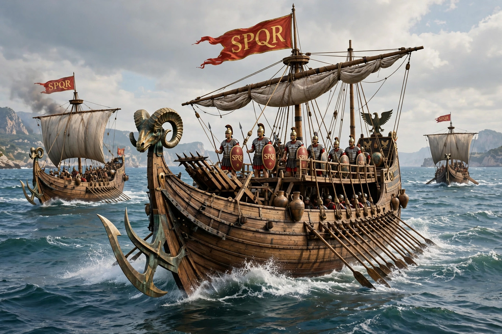

Battle of Actium
The Battle of Actium was a naval battle fought near the Roman colony of Actium in Greece on 2 September 31 BC, between the forces of Octavian and the combined armies of Mark Antony and Cleopatra VII of Egypt. Octavian's victory consolidated his power over Rome and the Mediterranean, paving the way for the Roman Empire; it is often regarded as one of the most consequential battles of the ancient world.

| Date | 2 September 31 BC |
|---|---|
| Location | Ionian Sea, near Actium, Greece |
| Result | Decisive victory for Octavian |
| Belligerents | Octavian's forces vs. Mark Antony and Cleopatra |
| Commanders | Marcus Agrippa (for Octavian); Mark Antony, Cleopatra |
| Strength | c. 400 ships vs. c. 500 ships |
Background
The Second Triumvirate of Octavian, Antony and Lepidus had collapsed into rivalry. Antony's alliance and marriage with Cleopatra, his donations of Roman territory to her children, and Octavian's propaganda — including the dramatic reading of Antony's will — led the Senate to declare war on Cleopatra in 32 BC.
Battle
Antony's fleet was blockaded in the Ambracian Gulf and weakened by disease and desertion. On 2 September his heavy quinqueremes engaged Octavian's smaller, faster liburnians, commanded by Marcus Agrippa. In the afternoon Cleopatra's squadron sailed through a gap and fled south; Antony followed, abandoning most of his fleet, which surrendered after further fighting. His land army capitulated days later.
Aftermath
Octavian pursued the pair to Egypt; both died by suicide in August 30 BC after the fall of Alexandria. Egypt became a Roman province, the civil wars ended, and in 27 BC Octavian took the title Augustus, becoming the first Roman emperor.
See also
Battle of Cannae · Augustus · Mark Antony · Cleopatra